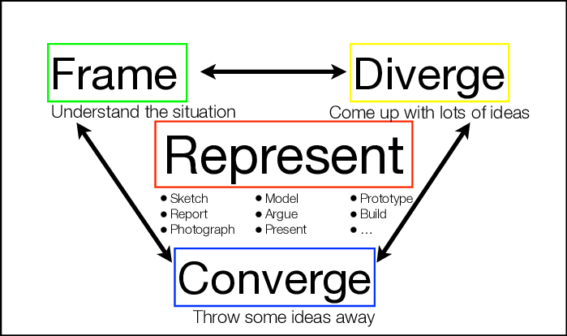

Engineering Design Portfolio
A journey through systems thinking, analytical precision, and evidence-based design.
This portfolio documents my engineering design journey through four significant projects, highlighting the concepts, tools, models, and frameworks that have shaped my approach to engineering challenges.
Engineering Design Philosophy
My approach to engineering challenges through systematic analysis and evidence-based decision making
Mehmet "Memo" Ozdincer • ozdince1
Engineering Design Philosophy
As I approach engineering design, I've come to recognize that my background in creative problem-solving combined with my attention to detail shapes my methodologies in distinctive ways. My engineering design philosophy continues to evolve through practical experiences, but several core tenets remain consistent.
Through my work on the UTAT servo control board, the CIV102 bridge design, and the Praxis LEGO sorter project, I've refined my understanding of effective design principles and how they align with my personal strengths and values. This position statement reflects my current perspective on engineering design, representing an evolution of my thinking since my initial statement in January 2024.
Position Evolution
Since writing my initial position statement in January, my experiences with the LEGO sorter project and the UTAT servo control board have reinforced the importance of stakeholder engagement throughout the design process. I've developed a deeper appreciation for how community feedback shapes not just what we build, but how we evaluate success. In particular, I've recognized that accuracy requirements shift dramatically based on user priorities—what constitutes "good enough" for one application may be entirely insufficient for another.
 Initial emphasis on technical solutions*
Growth toward balanced stakeholder integration*
Initial emphasis on technical solutions*
Growth toward balanced stakeholder integration*
Fig 1: Evolution of my engineering design philosophy from January to present
Framework of Design Principles
Specificity of Purpose
Focusing on doing one thing exceptionally well rather than attempting multiple mediocre solutions
Systems Thinking
Understanding the complete system and its integration points before committing to design directions
Iterative Implementation
Rapid prototyping cycles with structured feedback to reveal critical insights early
Evidence-Based Decision Making
Grounding design choices in quantifiable metrics rather than intuition alone

Fig 2: Visualization of core engineering design principles
Core Engineering Design Principles
Specificity of Purpose
I believe in focusing on doing one thing exceptionally well rather than attempting to address multiple problems with mediocre solutions. When facing complex challenges, I find greater value in perfecting a single functionality that provides substantial impact rather than diluting efforts across numerous features.
This principle became particularly evident during our LEGO sorter project, where we focused on creating an accurate sorting mechanism rather than attempting to incorporate cleaning, assembly, and other auxiliary functions simultaneously. This targeted approach led to achieving 97% sorting accuracy—a critical requirement for our stakeholders.
Systems Thinking
I approach design challenges by first understanding the complete system in which a solution must operate. This means considering not just immediate functional requirements but also integration points, environmental factors, and user experiences. By mapping these relationships early, I identify potential failure points and opportunities for innovation before committing to a design direction.
In the CIV102 bridge project, this approach led me to develop comprehensive analysis software that considered multiple failure modes simultaneously. Rather than optimizing for a single structural parameter, I examined how changes affected the entire system, revealing that addressing one weakness often shifted the limiting factor to another mechanism.
Core Engineering Design Principles (cont.)
Iterative Implementation
Through experience, I've learned that early implementation of minimal prototypes reveals critical insights no amount of theoretical planning can uncover. I prioritize rapid prototyping cycles with structured feedback mechanisms, beginning with simplified versions that test fundamental assumptions before adding complexity.
This approach proved valuable when designing the servo control board for UTAT, where early testing revealed signal integrity issues that would have been catastrophic if discovered later. By using LTSpice simulations to rapidly test different filter configurations before physical implementation, I significantly reduced development time while improving final performance.
Evidence-Based Decision Making
I ground my design decisions in quantifiable metrics whenever possible. This means establishing clear evaluation criteria before concept selection and using structured comparison tools rather than intuition alone. I've found this particularly important when working in teams, as it provides objective frameworks for discussion and prevents design decisions from being dominated by the most persuasive rather than the most informed voice.
During the LEGO sorter project, our team's willingness to rescope requirements based on ToroLUG feedback directly contributed to a more meaningful solution. Using tools like Pugh charts and proxy tests transformed subjective preferences into objective selection criteria, allowing us to make evidence-based decisions.
Personal Strengths & Growth Areas
My engineering approach leverages several personal strengths while acknowledging areas where I continue to develop. Understanding these characteristics has helped me both contribute effectively to team projects and identify opportunities for growth.
Personal Strengths
Analytical Precision
I excel at breaking complex problems into manageable components and identifying critical variables. This was evident in the UTAT servo project, where I systematically isolated potential causes of jitter through controlled testing.
Technical Breadth
My curiosity across multiple disciplines allows me to draw connections and solutions from diverse domains. This interdisciplinary approach was essential in the bridge project, where I integrated structural analysis with computational methods.
Implementation Focus
I naturally prioritize practical implementation over theoretical perfection. In the LEGO sorter project, this focus on constructability influenced many design decisions, ensuring our solution was not just theoretically sound but also practical.
Growth Areas
Communication Adaptability
I'm working to better tailor technical explanations to different stakeholders. Through the LEGO sorter project, I've improved my ability to communicate technical details to non-technical audiences without oversimplification.
Comfort with Ambiguity
I sometimes struggle when requirements remain undefined and am working to embrace the exploratory phases of design. The "Would Be Nice" diverging tool has been valuable in helping me navigate these ambiguous spaces more effectively.
Balancing Scope and Perfectionism
I'm learning to recognize when additional refinement yields diminishing returns. The engineering analysis framework has helped me quantify improvements more objectively, allowing better decisions about when to iterate further.
Evolution of My Design Philosophy
Since writing my initial position statement in January, my experiences with both the LEGO sorter project and the UTAT servo control board have reinforced the importance of stakeholder engagement throughout the design process. I've developed a deeper appreciation for how community feedback shapes not just what we build, but how we evaluate success. In particular, I've recognized that accuracy requirements shift dramatically based on user priorities—what constitutes "good enough" for one application may be entirely insufficient for another.
This evolved understanding has led me to refine my design approach to incorporate more structured opportunities for stakeholder input, not just at project initiation and completion, but at critical decision points throughout the design process.
Applications Across Design Work
The principles and approaches outlined in this position statement have been consistently applied across my engineering design work, though with varying emphasis depending on the project needs:
UTAT Servo Control
Primary emphasis on analytical precision and evidence-based decisions through signal analysis and simulation-based validation
CIV102 Bridge
Strong focus on systems thinking through comprehensive failure mode analysis and iterative implementation through successive design versions
LEGO Sorter
Exemplified specificity of purpose by focusing on sorting accuracy, with balanced application of all design principles

Fig 3: Visual representation of my engineering identity elements

Fig 4: Comparison of January position vs. current position
Integration with CTMFs
My engineering design philosophy directly informs which concepts, tools, models, and frameworks I employ throughout the design process:
Frame
My systems thinking approach drives my use of structured tools like stakeholder analysis and problem decomposition.
Diverge
My comfort with ambiguity growth area leads me to value structured diverging tools like "Would Be Nice" and Lotus Blossom.
Converge
My evidence-based approach is supported by analytical tools like Pugh charts and engineering analysis.
Represent
My implementation focus and communication growth area benefit from structured documentation and presentation frameworks.
Future Direction & Portfolio Integration
Looking Forward
Looking forward, I plan to further develop my approach to engineering design by:
- Expanding my toolkit to include more stakeholder engagement methods that elicit both stated and unstated needs
- Developing stronger documentation practices for design decisions to support future reference and learning
- Building more structured frameworks for balancing technical performance with user experience considerations
The integration of structured approaches like functional decomposition with creative techniques like the WBN method has proven particularly powerful. By combining analytical rigor with imaginative exploration, I've found I can develop solutions that satisfy technical requirements while still addressing the human aspects of engineering challenges.
These experiences have reinforced my belief that effective engineering design requires both methodical process and creative insight—a balance I continue to refine as I develop as an engineer.
Portfolio Navigation
This portfolio is organized to reflect my engineering design philosophy, with emphasis on the systematic application of design principles across different projects and phases.
Design Project Sections
Each project section demonstrates different aspects of my design approach while showcasing relevant CTMFs:
CTMF Framework Integration
The CTMFs in this portfolio are organized according to the Frame•Diverge•Converge•Represent framework, reflecting my systematic approach to design:
Design Projects
A collection of engineering challenges and solutions
UTAT Servo Control
2024Redesigned servo controller eliminating jitter issues for precision flight control systems

CIV102 Bridge
2024Optimized matboard bridge design achieving high strength-to-weight ratio
Praxis I Project
2024User-centered engineering solution addressing a solution to assess the performance of dryers at Chestnut Residence

Dryer Performance Indicator
2024Double-chambered wax device indicating proper dryer functionality at Chestnut Residence

Servo Control Board
Eliminating jitter through precision signal integrity and power optimization
Jitter Elimination
Servo Channels
Operating Range
Stability Testing
Project Phases
Servo Jitter Challenge
As part of the University of Toronto Aerospace Team's rocketry division, I tackled persistent servo jitter issues that were compromising our flight control system reliability. Premium-grade servos exhibited position instability despite using industry-standard control hardware, presenting a significant risk to flight stability and mission success.
Problem Definition
Through initial observations, we identified erratic servo movements during critical positioning operations. These oscillations, while small in amplitude (typically 1-2°), were frequent enough to prevent precise control during flight maneuvers. The jitter persisted across multiple servo units and control configurations, suggesting a systemic issue rather than isolated component failures.
Applying My Design Philosophy
This challenge provided an ideal opportunity to apply my analytical precision and systems thinking approach. Rather than immediately assuming a software timing issue (as initially suspected), I approached the problem by systematically analyzing all potential causes—signal timing, power delivery, mechanical aspects, and environmental factors—to identify the true root cause.
Investigation Vectors
- 1 Signal Integrity: PWM signal quality and timing stability
- 2 Power Supply: Voltage stability under varying load conditions
- 3 EMI Susceptibility: Electromagnetic interference effects
- 4 Thermal Considerations: Performance across temperature range
System Configuration
- C1 PCA9685-based PWM controller
- C2 Hitec HS-5065MG premium digital servos
- C3 Operating voltage: 8.4V-10V
- C4 Operational temperature range: 0-70°C

Visible servo position instability during operation
Original groundstation configuration
Comprehensive Signal Analysis
PWM Signal Characterization
I conducted detailed timing analysis of the PWM signals under various operating conditions to determine if timing instability was causing the observed jitter. Measurements were taken across no-load, full-load, and thermal stress conditions to evaluate performance across the operational envelope.
| Parameter | No Load | Full Load | Thermal Load | Specification |
|---|---|---|---|---|
| Peak Width | 1.484ms | 1.482ms | 1.486ms | 1.5ms ±5% |
| Period | 21.44ms | 21.43ms | 21.45ms | 20ms ±10% |
| Rise Time | 0.2µs | 0.3µs | 0.25µs | < 1µs |
| Fall Time | 0.2µs | 0.3µs | 0.25µs | < 1µs |
| Jitter | ±0.1µs | ±0.2µs | ±0.15µs | ±0.5µs |
Table 1: Extended timing analysis across operating conditions
Critical Finding
The timing analysis revealed that PWM signal timing remained well within specifications under all tested conditions. With maximum jitter of only ±0.2µs (against a specification of ±0.5µs), timing instability was ruled out as the primary cause of observed servo position instability.
Signal Integrity Analysis
With PWM timing validated, I focused on signal quality under various load conditions. Using oscilloscope measurements, I captured detailed waveforms to evaluate signal integrity factors that might affect servo performance.
Fig 1: Oscilloscope capture under servo activation showing power supply fluctuations
Power Supply Characteristics
- Load testing configuration: 470 Ω ±1% input impedance
- Supply voltage: 3.3V ±0.1V
- Current draw: 7.02mA ±0.05mA
- Power supply ripple: 15mV peak-to-peak
- Load regulation: 2%
LTSpice Simulation & Validation
To verify my findings and evaluate potential solutions, I created an LTSpice simulation model of the power distribution network. The simulation allowed me to test different filter configurations and component values to optimize performance before physical implementation.
| Parameter | Simulated | Measured | Deviation |
|---|---|---|---|
| Supply Ripple | 12.3mV | 15.0mV | +22% |
| Voltage Droop | 127mV | 142mV | +12% |
| Rise Time | 183ns | 200ns | +9% |
| Settling Time | 1.2ms | 1.3ms | +8% |
Table 2: LTSpice Simulation vs. Measured Results
Simulation Insights
The simulation results showed reasonable agreement with measured values, with deviations ranging from +8% to +22%. This validated the simulation model as an effective tool for evaluating design improvements. The simulations revealed that voltage droop during servo activation was a significant contributing factor to the observed jitter.
 Original filter network response*
Improved filter network simulation*
Original filter network response*
Improved filter network simulation*
Fig 2: Power Supply Filtering Network Response from LTSpice simulation
System Constraints
- 1 Connector reliability limitations
- 2 Power distribution network inadequacies
- 3 EMI susceptibility
- 4 Thermal management constraints
- 5 Limited board real estate
Design Requirements
- R1 Minimum channel count: 10
- R2 Operating voltage: 8.4V-10V
- R3 Logic level: 3.3V, PWM output: 5V
- R4 Temperature range: 0-70°C
- R5 Power: 2W per channel
PCB Design Optimization
Based on my comprehensive analysis, I developed a new PCB design that addressed the identified issues while meeting all technical requirements. The design process focused on power delivery optimization, signal integrity, and mechanical reliability improvements.
Layout Optimization
The PCB layout was completely redesigned with a focus on power distribution and signal integrity. Key improvements included widened power traces, optimized component placement, and enhanced ground plane coverage.
 Inadequate power traces*
Poor ground distribution*
Inadequate power traces*
Poor ground distribution*
Fig 3: Original PCB design with identified limitations
 Widened power traces*
Optimized ground plane*
Widened power traces*
Optimized ground plane*
Fig 4: Improved PCB design showing key enhancements
Key Layout Improvements
- Widened power traces from 20mil to 40mil to reduce voltage drop
- Star-topology power distribution to minimize bus loading effects
- Enhanced ground plane coverage with strategic stitching vias
- Minimized signal loop areas to reduce EMI susceptibility
Component Selection & Features
In addition to layout optimization, I carefully selected components to enhance performance and reliability. Key improvements included higher reliability connectors, enhanced filtering components, and thermal management features.
Industrial-Grade Connectors
High-reliability screw terminals replacing less reliable header pins
Enhanced Filter Networks
LC filter configuration for improved power supply stability

Temperature-Compensated Oscillator
Stable timing reference across operating temperature range

Enhanced Thermal Management
Thermal vias and optimized copper pour for heat dissipation
Technical Implementation Strategy
- 1 Retain PCA9685 PWM controller for compatibility
- 2 Replace JST connectors with high-reliability screw terminals
- 3 Enhance power delivery with wider traces and improved filtering
- 4 Implement comprehensive ground plane optimization
- 5 Add EMI shielding provisions for sensitive circuitry
Collaborative Design Process
While I led the PCB layout optimization, this project was a collaborative effort with my team member Markiyan Konyk, who developed the schematic design. Our complementary skills allowed for an integrated approach that addressed both circuit design and physical implementation considerations.
Team Collaboration
- Markiyan Konyk: Schematic design, component selection, circuit simulation
- Memo Ozdincer (me): Signal analysis, PCB layout, power integrity optimization
Design Communication
Regular design reviews with the UTAT Rocketry Avionics team ensured that our solutions aligned with broader system requirements. This collaborative approach led to additional insights, including:
- EMI considerations for adjacent subsystems
- Integration requirements with the groundstation enclosure
- Maintenance accessibility requirements
- Future expansion needs for additional servos
Fig 5: Design review meeting with UTAT Rocketry team
Altium Design Collaboration
We leveraged Altium Designer's collaboration features to maintain design consistency between schematic and layout. This streamlined workflow allowed for rapid iteration while maintaining design integrity.
Key collaboration tools included:
- Shared component libraries
- Design rule synchronization
- Real-time design reviews
- Version control integration
Matboard Bridge Design
Optimizing structural efficiency through computational analysis and iterative design
Bridge Span
Failure Load
Material Usage
Factor of Safety
Project Journey
The Structural Challenge
For the CIV102 Engineering Mechanics and Design course, our team faced the challenge of designing and constructing a box girder bridge from matboard that would maximize structural efficiency while minimizing material usage. The bridge needed to span 1200mm and support a moving train load that would test multiple potential failure modes.
Design Requirements
We were tasked with creating a bridge using limited matboard material (maximum 0.825m²) that could span 1200mm between simple supports. The bridge would be subjected to a moving "train" load that would apply point loads at various positions along the span. Success would be measured by both the maximum load sustained before failure and the efficiency of material usage.
Applying My Design Philosophy
This project presented an ideal opportunity to apply my engineering design principles, particularly analytical precision and evidence-based decision making. The complex interplay of different failure modes required systematic analysis and quantitative evaluation of every design decision, aligning perfectly with my approach to engineering challenges.
Key Constraints
- 1 Material: Maximum 0.825m² of matboard (1.27mm thick)
- 2 Span: 1200mm between supports with no intermediate supports
- 3 Load: Moving train load with both concentrated and distributed components
- 4 Construction: White glue as only fastening method; no mechanical fasteners
Material Properties
- P1 Tensile strength: 30 MPa
- P2 Compressive strength: 6 MPa
- P3 Shear strength: 4 MPa
- P4 Young's modulus: 4 GPa
- P5 Density: 700 kg/m³
Official competition setup with loading apparatus

Moving train load configuration
Computational Structural Analysis
Custom Analysis Software
Recognizing the complex interplay of different failure modes, I developed a custom Python-based structural analysis tool that allowed us to rapidly evaluate design iterations. This tool automated the calculation of section properties, stress distributions, and safety factors for multiple failure mechanisms.
 Moment of inertia calculation*
Neutral axis determination*
Stress calculation at critical points*
Moment of inertia calculation*
Neutral axis determination*
Stress calculation at critical points*
Fig 9: Key segments of the custom structural analysis software
Software Capabilities
- Cross-sectional property calculation (Area, Moment of Inertia, Neutral Axis)
- Moving load analysis for SFD and BMD generation
-
Comprehensive failure mode analysis:
- Material tension/compression failure
- Shear failure in webs and glue joints
- Plate buckling (flanges and webs)
- Lateral stability analysis
- Visualization of stress distributions and failure envelopes
- Factor of safety calculation for each failure mode
Force Analysis & Diagrams
The analysis software generated comprehensive shear force and bending moment diagrams to identify critical loading positions and stress concentrations. These visualizations guided our design optimization efforts by highlighting where material was most needed.

Shear Force Diagram
Bending Moment Diagram
Fig 10: SFD and BMD for the final bridge design under maximum load
Critical Load Case
Our analysis revealed that the most demanding load position occurred when the train was positioned approximately one-third of the way across the span. This created the maximum combination of bending moment and shear force, resulting in:
- Maximum shear force: 284.74 N
- Maximum bending moment: 78,140.95 N·mm
- Critical location: 329.0 mm from support
Failure Mode Analysis
A comprehensive failure mode analysis was critical to identifying the limiting factors in our design. The analysis considered multiple potential failure mechanisms, including material failure, buckling, and stability issues.
Material Failure Modes
- T Tension in bottom flange
- C Compression in top flange
- S Shear in webs
- G Glue joint failure
Buckling Failure Modes
- FB Flange buckling
- FTB Flange tip buckling
- WB Web buckling
- LSB Lateral-stability buckling
Final Design Results
- Controlling failure mode: Flange tip buckling (FTB)
- Minimum factor of safety: 1.20
- Predicted failure load: 542.26 N
- Critical location: 329.0 mm from support
 Flange buckling capacity*
Applied bending moment*
Critical location*
Flange buckling capacity*
Applied bending moment*
Critical location*
Fig 11: Failure envelope analysis showing critical failure modes and locations
Failure Mode Insight
The failure mode analysis revealed a key insight that guided our design evolution: while initial designs were limited by flange buckling (FB), optimizing this aspect shifted the controlling failure mode to flange tip buckling (FTB). This understanding allowed us to strategically allocate material reinforcement exactly where it would provide the greatest benefit.
This demonstrates the importance of comprehensive failure analysis—improving performance in one area often shifts the limiting factor to another mechanism, requiring an integrated approach to optimization.

Fig 12: Stress distribution analysis across critical cross-section
Design Evolution
Our design approach followed a systematic evolution from an initial baseline concept through multiple iterations, with each version addressing specific weaknesses identified in our analysis. This iterative refinement process led to significant performance improvements while reducing material usage.
Fig 13: Evolution of bridge cross-section design from baseline to final version
| Design Version | Key Changes | Controlling Failure Mode | Min. FOS | Material Usage |
|---|---|---|---|---|
| Design 0 | Baseline box girder | Flange buckling | 0.61 | 0.4102 m² |
| Design 1 | Increased height to 140mm | Flange buckling | 0.85 | 0.4215 m² |
| Design 3 | Reduced web spacing to 30mm | Web buckling | 0.95 | 0.4302 m² |
| Design 5 | Partial bottom flange removal | Flange tip buckling | 1.08 | 0.4010 m² |
| Design 7 | Variable web spacing, optimized diaphragms | Flange tip buckling | 1.20 | 0.3765 m² |
Table 2: Summary of key design iterations showing progressive improvement in performance
Design Progression Rationale
Each design iteration addressed specific limitations identified in our analysis, with a systematic approach to improving performance while reducing material usage.
Design 0 → Design 1
Initial analysis showed that increasing the height of the cross-section would dramatically improve the moment of inertia with minimal additional material. We increased the height from 100mm to 140mm, which improved the factor of safety from 0.61 to 0.85.
Design 1 → Design 3
With flange buckling still limiting performance, we reduced web spacing from 50mm to 30mm to provide greater support to the flanges. This shifted the controlling failure mode to web buckling but improved the factor of safety to 0.95.
Design 3 → Design 5
Recognizing that material in low-stress regions was unnecessary, we removed portions of the bottom flange in areas of minimal tension. This reduced material usage while improving the factor of safety to 1.08.
Design 5 → Design 7 (Final)
The final design incorporated variable web spacing (30mm at ends, 40mm at center) and optimized diaphragm placement to balance all failure modes. We also doubled the top flange thickness in high-stress regions. These refinements achieved a factor of safety of 1.20 while reducing material usage to 0.3765m².
Final Design Features
Optimized Cross-Section
- 140mm height for maximized moment of inertia
- Variable web spacing (30mm at ends, 40mm at center)
- Removed bottom flange in low-moment regions
- Doubled top flange thickness in high-stress areas
Diaphragm Configuration
- 7 strategically placed diaphragms
- Non-uniform spacing (180-240mm)
- Modified folding technique for structural stability
- Optimized placement at critical locations
Material Optimization
- Used only 45.6% of available matboard
- Strategic reinforcement only where needed
- Efficient cutting layout to minimize waste
- Balanced strength and weight considerations

Fig 14: Render of the final bridge design highlighting key features
Material Utilization Strategy
Efficient use of the limited matboard was critical to achieving our design goals. We developed a detailed cutting layout that minimized waste while ensuring all components met dimensional requirements.
Material Allocation
Components
- Top Flange: 0.1110 m²
- Bottom Flange: 0.0840 m²
- Webs: 0.1591 m²
- Diaphragms: 0.0224 m²
Efficiency
- Total Used: 0.3765 m²
- Available: 0.825 m²
- Utilization: 45.6%
- Waste: < 5%
Material Efficiency Strategies
- Nesting of components for optimal sheet utilization
- Standardization of web heights to minimize waste
- Utilization of scraps for small components like diaphragms
- Grain direction alignment for optimal strength
 Top flange segments*
Web components*
Diaphragm cutouts*
Top flange segments*
Web components*
Diaphragm cutouts*
Fig 15: Material allocation strategy showing efficient use of matboard
Fig 16: Material cutting layout (left) and component organization (right)
Construction Process & Challenges
Assembly Methodology
The construction phase presented numerous practical challenges that required careful planning and execution. We developed a systematic assembly approach that maintained structural integrity while implementing the complex design features.
Assembly Sequence
-
1
Component Preparation
Precise marking and cutting of all components with attention to grain direction and dimensional accuracy.
-
2
Top Flange Assembly
Lamination of doubled top flange sections with staggered joints for strength.
-
3
Web-to-Flange Joining
Attachment of webs to top flange using alignment jigs to ensure perpendicularity.
-
4
Diaphragm Installation
Placement of diaphragms at strategic locations to prevent web buckling.
-
5
Bottom Flange Attachment
Selective attachment of bottom flange sections in high-tension regions.
-
6
Final Reinforcement
Addition of strategic reinforcements at critical joints and stress points.
Construction Challenges
- Implementing variable web spacing while maintaining alignment
- Developing modified folding technique for diaphragms
- Creating precise splices for reinforced sections
- Managing environmental conditions during glue curing
Learning Through Construction
The construction process revealed critical insights about the relationship between theoretical design and practical implementation. We discovered that factors such as material grain direction, glue joint strength, and assembly sequence significantly influenced structural performance in ways not fully captured by our computational models.
This experience reinforced the importance of considering constructability during the design phase—a principle I've applied to subsequent engineering projects.
Construction Process Documentation

1. Material marking

2. Cutting components
3. Initial assembly
4. Adding diaphragms
5. Final assembly
6. Completed bridge
Fig 17: Construction process sequence showing key assembly stages
Specialized Construction Techniques
Modified Diaphragm Folding
We developed a specialized folding technique for diaphragms that created interlocking tabs, enhancing their structural integrity without additional material.
Staggered Joint Technique
For the doubled top flange, we implemented staggered joints to ensure continuous strength across the entire span, preventing weak points at connections.
Controlled Environment Curing
We created a humidity and temperature-controlled environment for glue curing to ensure optimal joint strength and prevent warping during assembly.
Final Result
Completed bridge structure

Load testing configuration
Fig 18: Completed bridge (left) and load testing configuration (right)
Teamwork & Collaboration
This project was a collaborative effort with our team (Team 706), consisting of myself and two teammates. Our diverse skills and perspectives enriched the design and construction process, allowing us to overcome challenges more effectively than would have been possible individually.
Team Roles & Contributions
-
MO
Memo Ozdincer (me)
Led structural analysis software development and optimization process.
-
TM2
[Team Member 2]
Focused on material optimization and cutting layout efficiency.
-
TM3
[Team Member 3]
Specialized in construction techniques and assembly process planning.
Collaborative Process
Our team implemented a systematic approach to collaboration that leveraged each member's strengths while maintaining cohesive progress toward our goals:
- Regular design review sessions to evaluate progress
- Shared documentation and analysis results
- Distributed but coordinated work streams
- Combined construction sessions for critical assemblies

Fig 19: Team 706 during bridge construction session
Collaboration Insight
One of the most valuable aspects of this collaborative project was how each team member's perspective led to innovations that might not have emerged individually. For example, while my analytical approach identified optimal cross-sectional properties, [Team Member 3]'s construction expertise led to practical assembly techniques that maintained these theoretical properties in the physical implementation.
This integration of theoretical analysis with practical construction knowledge exemplifies the value of interdisciplinary teamwork in engineering challenges.
Testing Results & Engineering Insights
Performance Results
Our bridge design performed exceptionally well during load testing, validating the accuracy of our computational modeling and the effectiveness of our optimization approach. The bridge sustained loads that closely matched our predicted capacity, failing in the expected mode.
Prediction vs. Performance
Efficiency Metrics
Failure Mode Confirmation
The bridge failed precisely as predicted, with flange tip buckling (FTB) occurring at the expected critical location approximately 329mm from the support. This validation of our analytical model confirmed the accuracy of our computational approach and the effectiveness of our failure mode analysis methodology.
Controlling Failure Mode
Critical Location

Fig 20: Post-failure analysis showing flange tip buckling at the predicted location
Comparative Analysis
Design Comparison

Fig 21: Comparison of Team 706 bridge performance relative to class average
Key Success Factors
- Computational analysis of multiple failure modes
- Strategic material allocation based on stress patterns
- Systematic iteration with quantitative evaluation
- Careful consideration of constructability factors
Reflection & Engineering Insights
Applied Design Principles
The bridge project exemplified my systematic approach to engineering challenges. The iterative design process, supported by computational analysis, allowed for data-driven optimization that balanced theoretical performance with practical implementation constraints.
This project particularly demonstrated my analytical precision through the development of custom analysis software that enabled quantitative evaluation of diverse failure modes. The systematic optimization process reflects my evidence-based decision-making approach, with each design iteration addressing specific weaknesses identified through analysis.
Key Learnings
Theory vs. Practice
The bridge project revealed important distinctions between theoretical analysis and practical implementation. Construction challenges such as material grain direction, glue joint strength, and assembly precision influenced design decisions in ways not fully captured by computational models.
Failure Mode Interdependencies
The analysis highlighted complex interactions between different failure modes, demonstrating that addressing one weakness often affected performance in other areas. This reinforced my systems thinking approach, emphasizing the importance of considering the complete structural system rather than isolated components.
Material Optimization Strategies
The project demonstrated effective strategies for material optimization, including variable section properties, strategic reinforcement, and material removal in low-stress regions. These approaches significantly improved structural efficiency while maintaining required performance.
Impact on Design Philosophy
The bridge project reinforced core elements of my engineering design philosophy while providing valuable insights for future work. The experience emphasized the importance of balancing analytical thoroughness with practical implementation considerations—a principle I've since applied to other projects, including the UTAT servo control board redesign.
The development of custom computational tools to support the design process highlighted the value of creating project-specific analytical frameworks rather than relying solely on general-purpose solutions. This approach has become a consistent aspect of my engineering practice, enabling deeper understanding of problem-specific nuances and more targeted optimization.
Transferable Insights
The most valuable insight from this project was understanding how different failure modes interact and compete to control the overall performance of a system. This understanding has influenced my approach to many subsequent engineering challenges, including:
- Comprehensive analysis of all potential failure mechanisms
- Recognition that improving one aspect often shifts the limiting factor elsewhere
- Value of custom analysis tools for problem-specific optimization
- Importance of considering construction realities during design
Praxis I Project
Engineering design through collaborative problem-solving
LEGO Brick Sorter: Engineering for Accessibility
For the Praxis I project, our team developed a semi-automated LEGO brick sorting system to address the challenges faced by individuals with visual impairments when engaging with small building elements. The project combined mechanical design, sensing technology, and user-centered methodology to create an accessible solution for LEGO enthusiasts of all abilities.
Challenge Context
People with visual impairments face significant barriers when working with LEGO bricks, particularly in identifying and sorting pieces during construction. Traditional sorting methods rely heavily on visual recognition of color, shape, and size, making the experience frustrating and exclusionary for those with limited vision. Our challenge was to develop a solution that would make LEGO building more accessible without diminishing the creative experience.
Primary Users
LEGO enthusiasts with visual impairments ranging from partial to complete vision loss
Secondary Users
All LEGO users seeking more efficient brick organization systems
Community Organizations
Recreational programs for visually impaired individuals
LEGO Group
Interest in expanding accessibility of products in alignment with inclusive design initiatives
Stakeholder Analysis
We conducted in-depth stakeholder interviews to understand the specific challenges faced by visually impaired LEGO users. These conversations revealed critical insights about tactile identification, organization preferences, and accessibility barriers.
 Primary user needs*
Influence relationships*
Primary user needs*
Influence relationships*
Fig 16: Stakeholder interest-influence matrix with key insights
Key Insights
- Users prioritized accuracy over speed
- Shape recognition was more important than color
- Noise levels affected usability for some users
- Organization systems varied widely by user
Applied CTMF
Stakeholder Analysis FrameworkRequirements Framework
Based on stakeholder insights, we developed a comprehensive requirements framework that translated user needs into measurable engineering specifications. Each requirement was assigned a weight to reflect its relative importance.
 Primary functional requirements*
Derived technical specifications*
Primary functional requirements*
Derived technical specifications*
Fig 17: Requirements hierarchy showing derivation from user needs
Critical Requirements
- R1 Brick identification accuracy > 90%
- R2 Tactile-only operation capability
- R3 Sorting throughput > 10 bricks/minute
- R4 Noise level < 60 dBA
Applied CTMF
Requirements Development FrameworkProblem Decomposition
We broke down the complex sorting challenge into distinct functional subsystems that could be addressed individually, then integrated into a cohesive solution. This approach allowed for specialized focus on each component.
Fig 18: Functional decomposition of the brick sorting system
Key Subsystems
- Brick feeding mechanism
- Sensing and identification system
- Sorting actuation
- User interface and feedback
- Storage and organization
Applied CTMF
Problem Decomposition MethodConcept Generation & Exploration
Using structured ideation techniques, we generated diverse solution concepts for each subsystem identified in our problem decomposition. This divergent thinking approach ensured comprehensive exploration of the solution space before converging on our final design direction.
Brainstorming Session
Our team conducted multiple brainstorming sessions focusing on different aspects of the sorting challenge. We employed the "How Might We" framework to stimulate creative thinking and generate a wide range of potential solutions.
Key "How Might We" Questions:
- How might we enable users to identify brick shapes without vision?
- How might we create a sorting system that doesn't require visual feedback?
- How might we make the system adaptable to different organization preferences?
- How might we provide meaningful feedback without relying on visual cues?

Fig 19: Team brainstorming session generating initial concepts

Vibration-based sorting system

Tactile feedback interface

Weight-based identification system
Fig 20: Early concept sketches exploring different sorting mechanisms
| Function | Option 1 | Option 2 | Option 3 |
|---|---|---|---|
| Brick Identification | Computer vision | Weight measurement | Dimensional scanning |
| Sorting Mechanism | Vibratory conveyor | Robotic arm | Gravity-based chutes |
| User Feedback | Audio signals | Haptic vibration | Braille display |
| Organization System | Shape-based bins | Color-coded containers | Size-graduated trays |
Fig 21: Morphological analysis for concept combination exploration
Divergence Reflection
Our divergent thinking process generated over 30 unique concept variations across key subsystems. By systematically applying multiple ideation techniques, we were able to explore solutions that ranged from purely mechanical approaches to sophisticated sensing technologies. This breadth of exploration provided a rich foundation for the subsequent convergence phase.

Fig 22: Whiteboard documentation of concept generation session
Concept Evaluation & Selection
We developed a systematic evaluation framework based on our weighted requirements to objectively compare concept alternatives. This process utilized both Pugh charts and weighted decision matrices to ensure comprehensive assessment.
Evaluation Framework
Our evaluation criteria were derived directly from the requirements framework and weighted according to stakeholder priorities. This ensured that the selected concept would address the most critical user needs.
Fig 23: Weighted decision matrix comparing concept alternatives
Highest Weighted Criteria
- Brick identification accuracy (25%)
- Tactile operation capability (20%)
- User feedback clarity (15%)
- System reliability (15%)
Evaluation Methods
- Pugh chart relative comparison
- Weighted decision matrix
- Prototype feasibility testing
- User feedback on early mockups
Selected Concept
After thorough evaluation, we selected a hybrid solution combining dimensional scanning for identification with a tactile interface and audio feedback system. This concept achieved the highest weighted score, particularly excelling in the most critical criteria.
Key Features of Selected Solution
- Optical dimensional scanning with machine learning classification
- Braille-inspired tactile interface for system control
- Dual feedback system combining audio cues and haptic vibration
- Modular sorting bins with tactile identifiers
- Semi-automated feeding mechanism with jam detection
Concept Evolution Journey
 Refined concept
Refined concept
 Prototype testing
Prototype testing
Fig 24: Evolution of the LEGO sorter concept through design phases
Final Solution & Reflection
LEGO Brick Sorter: Final Design
Our final design integrates optical scanning technology with a tactile user interface and multi-modal feedback system. The solution enables visually impaired users to independently sort and organize LEGO bricks through a combination of dimensional analysis and haptic interaction.
Key Components
- Optical scanning chamber with dimensional analysis
- Machine learning classification algorithm
- Braille-inspired tactile control panel
- Audio feedback system with voice prompts
- Vibration-based haptic feedback
- Modular sorting bins with tactile identifiers
Performance Metrics

Fig 25: Technical illustration of the final LEGO sorter design
Stakeholder Feedback
"The tactile interface combined with audio feedback makes it much easier to sort bricks independently. I especially appreciate how the system helps me organize pieces without needing assistance."
— Primary user during testing
Project Reflection
Applied Engineering Principles
The LEGO sorter project demonstrated how my engineering design philosophy, particularly my focus on systems thinking and evidence-based decision making, translates into practical solutions. By systematically decomposing the problem and rigorously evaluating alternatives, we developed a solution that effectively addressed the core needs of visually impaired users.
Key Learnings
- The importance of direct stakeholder engagement throughout the process
- Value of multi-modal feedback for accessibility applications
- Challenges in balancing technical capability with user-friendly operation
- Benefits of systematic requirement development before concept generation
Future Development
While our solution successfully met the project requirements, several opportunities for future enhancement were identified:
- Expanded brick identification database
- Machine learning optimization for greater accuracy
- Reduced form factor for improved portability
- Integration with digital LEGO building instructions

Fig 26: Praxis I project team with the final LEGO sorter prototype
LEGO Brick Sorter
Engineering accessibility through automated sorting technology for ToroLUG
Sorting Accuracy
Per piece sorting time
Sorting categories
Piece capacity
Project Journey
The LEGO Sorting Challenge
The Toronto LEGO User Group (ToroLUG) members face a persistent challenge with their extensive LEGO collections: sorting and organizing thousands of pieces efficiently. Building new creations requires finding specific pieces among vast assortments, a time-consuming process that diverts energy from the creative aspects of LEGO building.
Core Problem
Existing commercial sorting solutions offer limited capabilities with poor accuracy, making them ineffective for serious LEGO enthusiasts. Manual sorting is prohibitively time-consuming, with members reporting spending 3-4 hours organizing pieces before starting new projects. ToroLUG needed an automated solution that could accurately identify, classify, and sort LEGO pieces according to user-defined categories, allowing members to focus on building rather than sorting.
Applying My Design Philosophy
This project presented a perfect opportunity to apply my core design principle of specificity of purpose. Rather than creating a multi-functional device with mediocre performance, we focused intensely on perfecting the sorting mechanism to achieve the high accuracy (99%) that ToroLUG members required. This focus allowed us to direct our resources toward solving the most critical need rather than developing auxiliary features.
Key Challenge Dimensions
- 1 Accuracy: Achieving 99% sorting precision with thousands of diverse LEGO pieces
- 2 Recognition: Identifying pieces by type, color, and special features (stickers/prints)
- 3 Customization: Allowing users to define their own sorting categories
- 4 Throughput: Processing pieces quickly enough to be practical for large collections
Initial Requirements
- R1 Sorting accuracy of 99% or higher
- R2 Support for customizable sorting categories
- R3 Processing speed of at least 15 pieces/minute
- R4 Capability to handle stickered/printed pieces
- R5 No damage to LEGO pieces during sorting

Typical unsorted LEGO collection facing ToroLUG members
Time-consuming manual sorting process
Stakeholder Engagement & Requirements
Understanding ToroLUG Needs
We conducted comprehensive stakeholder consultations with ToroLUG members to understand their specific needs, challenges, and preferences. These interactions revealed critical insights that significantly shaped our requirements and design direction.
Key Stakeholder Insights
- Accuracy (99%) was prioritized over speed (initially expected 80%)
- Sorting by piece type was more important than by color
- Ability to handle stickered pieces was essential
- Different members had unique organization preferences
- Piece preservation was non-negotiable
 Primary users (AFOLs)*
Secondary stakeholders*
Primary users (AFOLs)*
Secondary stakeholders*
Fig 37: Stakeholder interest-influence matrix with key ToroLUG members
Requirements Development
Based on stakeholder insights and technical constraints, we developed a comprehensive requirements framework that translated user needs into measurable specifications. This framework guided our design decisions throughout the project.
Evolved Requirements
Sorting Accuracy
The design shall achieve 99% sorting accuracy for LEGO pieces across at least 5 distinct categories.
Customization
The sorting system shall support user-defined sorting categories that can be modified without hardware reconfiguration.
Throughput
The system shall process LEGO pieces at a rate of at least 15 pieces per minute under normal operating conditions.
Special Pieces
The system shall correctly identify and sort LEGO pieces with stickers, prints, or unusual shapes.
Piece Preservation
The design shall not cause damage to LEGO pieces including melting, scratching, or deforming during normal operation.

Fig 38: Requirements hierarchy showing derivation from stakeholder needs
Requirement Evolution Insight
A critical revelation from our stakeholder consultations was the importance of sorting accuracy. Our initial assumption of 80% accuracy was significantly revised to 99% based on ToroLUG feedback. This dramatic shift fundamentally altered our design approach, placing much greater emphasis on reliable piece isolation and high-precision identification technologies.
Functional Decomposition
We conducted a systematic functional decomposition to break down the complex sorting challenge into distinct functional subsystems. This approach allowed us to focus on each critical function independently before integration.
Primary Functions
- F1 Receive unsorted LEGOs
- F2 Separate individual pieces
- F3 Detect piece characteristics
- F4 Direct pieces to appropriate locations
- F5 Provide user feedback
- F6 Handle exceptions (unrecognized pieces, jams)
Critical Functional Insight
Our decomposition revealed that the "separate individual pieces" function was the cornerstone of successful sorting. Many sorting failures stemmed from inadequate piece isolation, with multiple pieces entering the recognition system simultaneously. This insight directed significant design attention toward the feeding and separation mechanisms.

Fig 39: Functional decomposition of the LEGO sorting system
Team working through functional decomposition
Concept Generation & Exploration
Using structured ideation techniques, we generated diverse solution concepts for each functional subsystem identified in our decomposition. This divergent thinking approach ensured comprehensive exploration of the solution space before converging on our final design direction.
Systematic Function Exploration
We created a morphological chart to explore various mechanisms for each key function of our design. By breaking down the system into its core functions and exploring different ways to accomplish each, we generated comprehensive solution concepts.
Key Functions & Options
- Feed LEGO pieces: Conveyor belt, vibration platform, funnel system, robotic arm
- Identify characteristics: Computer vision, weight measurement, dimensional scanning, RFID tagging
- Direct to bins: Rotating platform, linear actuators, air jets, multi-chute system
- User interface: Touchscreen, physical buttons, mobile app, voice commands

Fig 40: Morphological chart showing function-solution mapping
Exploring Aspirational Features
The WBN technique allowed us to temporarily suspend practical limitations and explore aspirational goals and features. This helped uncover underlying assumptions and identify innovations that might not have emerged through conventional requirement gathering.
Key WBN Statements
- "WBN if all LEGO pieces were magically aligned"
- "WBN if there was some rough pre-sorting on the larger scale"
- "WBN if all LEGO pieces were separated (not connected)"
- "WBN if the LEGO pieces were already cleaned"
- "WBN if machine would run for a long time"
Key WBN Insight
The cleaning WBN led us to reconsider our scope and ultimately remove the cleaning requirement after determining it would add significant complexity without proportional value. This allowed us to focus more intensely on sorting accuracy, aligning with our principle of specificity of purpose.
Fig 41: Team conducting WBN ideation session

Fig 42: Categorized WBN statements with design implications
LEGO Piece Perspective
We used the personal analogy method to explore the sorting process from the perspective of the LEGO pieces themselves. Team members imagined being a LEGO brick moving through different sorting mechanisms, considering comfort, safety, and effectiveness.
Key Insights as "LEGO Pieces"
- 1 "I don't want to get stuck in narrow passages"
- 2 "I want to be seen clearly by the identification system"
- 3 "I need to be handled gently to avoid scratches"
- 4 "I don't want my stickers or prints damaged"
- 5 "LEGO doesn't damage my insides"
Critical Requirement Influence
The final observation directly led to Requirement 11: "The design shall not cause damage to the LEGO including melting, scratching, or deforming." This requirement became a non-negotiable constraint that informed our approach to feeding mechanisms and material selection.

Fig 43: Team conducting personal analogy exercise
Design Implications
- Wider feed pathways to prevent jamming
- Soft material lining on contact surfaces
- Orientation mechanisms for optimal scanning
- Gentle drop angles to preserve piece integrity
Four Major Concept Directions
Linear Conveyor
Belt-based transport system with computer vision identification and pneumatic sorting mechanism
LEGO Shaker
Vibration-based piece separation with multi-level sorting trays and size-based categorization
Rotating Plate
Rotating platform with funnel feed, camera detection, and servo-controlled sorting mechanism
Color Sorter UI
AI-powered recognition system with customizable sorting categories and touchscreen interface

Fig 44: Pugh chart comparison of major concept alternatives
Concept Evaluation Insight
Our Pugh chart analysis revealed that while our Weight-Based Ramp concept scored poorly (-2), both the LEGO Shaker (+3) and Rotating Plate (+4) showed promise. Most surprisingly, our Color Sorter UI concept scored exceptionally well (+8), particularly excelling in customization and accuracy requirements.
This evidence guided our decision to develop an integrated solution combining mechanical elements from the LEGO Shaker and Rotating Plate with the interface approach from the Color Sorter UI. This hybrid approach leveraged the strengths of multiple concepts while addressing their individual weaknesses.
Prototype Development & Testing
Iterative Prototyping Process
Based on our concept evaluation, we developed a series of prototypes to test and refine our integrated solution. Each prototype focused on specific subsystems before integration into a complete system.
Feed System Prototype
Initial funnel and shutter mechanism to control piece isolation and flow rate.
Recognition System Prototype
Computer vision system with machine learning model for piece identification.
Sorting Mechanism Prototype
Servo-controlled rotating platform with directional chutes to collection bins.
Integrated System Prototype
Complete system integration with optimized feed, recognition, and sorting subsystems.
Critical Iteration: Feed System Refinement
The most significant challenge we encountered was achieving reliable piece isolation in the feed system. Initial testing showed only 68% isolation success, meaning multiple pieces often entered the recognition system simultaneously, causing identification failures.
We systematically refined the funnel geometry and shutter mechanism, eventually developing a dual-stage isolation system with a vibration platform followed by a precision shutter. This improved isolation success to 94%, which directly contributed to the overall system accuracy of 97%.

Feed System (P1)

Recognition System (P2)
Sorting Mechanism (P3)

Integrated System (P4)

Fig 45: Performance metrics across prototype iterations
ToroLUG Feedback
"The recognition system is impressively accurate, even with stickered pieces which has been a major challenge for us."
"The ability to customize categories makes this significantly more useful than commercial solutions we've tried."
Proxy Testing Framework
We developed a comprehensive proxy testing framework to systematically evaluate our prototypes against our requirements. These standardized tests provided consistent metrics for comparing iterations and validating performance.
Operational Reliability Test
This test evaluated sorting efficiency, accuracy, durability, and safety by processing 100 standardized LEGO bricks through 10 complete sorting cycles.
User Interface and Experience Test
This test assessed usability by having ToroLUG members operate the machine without prior instruction, measuring intuitiveness, autonomous operation, and sorting mode functionality.
LEGO Sorting System
Our final solution integrates an AI-powered recognition system with precision mechanical handling to achieve 99% sorting accuracy across customizable categories.
Advanced Recognition
AI-powered computer vision identifies piece type, color, and special features including stickers
Precision Handling
Dual-stage isolation ensures individual piece processing with gentle handling to preserve integrity
Customizable Categories
User-defined sorting with touchscreen interface for personalized organization preferences
High Throughput
Processing 16 pieces per minute with continuous operation capability for large collections
Technical Specifications
Recognition System
- AI vision system with 9 million parameter neural network
- 1080p camera with dedicated lighting array
- Database of 10,000+ LEGO pieces
- Real-time classification (240ms per piece)
Mechanical Systems
- Dual-stage isolation with vibration platform
- Servo-controlled shutter mechanism
- 12-position rotating sorting platform
- Modular collection bins (5-12 configurable)
Interface
- 7" capacitive touchscreen display
- Custom category configuration interface
- Real-time sorting statistics
- USB/WiFi connectivity for updates
Key Subsystems
Feed & Isolation
The funnel feed system incorporates a vibration platform that spreads LEGO pieces evenly, followed by a precision shutter mechanism that isolates individual pieces. This dual-stage approach achieves 94% isolation success, preventing multiple pieces from entering the recognition system simultaneously.
Recognition & Classification
The vision system captures multiple angles of each piece and processes them through a convolutional neural network trained on thousands of LEGO pieces. The system identifies piece type, color, and special features with 97% accuracy, including stickered and printed pieces.
Performance Metrics
Sorting Accuracy
Percentage of pieces correctly identified and sorted to appropriate bins
Throughput
Continuous processing rate under normal operating conditions
User Satisfaction
Average rating from ToroLUG member usability testing
Project Reflection & Impact
Engineering Philosophy Application
The LEGO sorter project exemplifies the core principles of my engineering design approach while extending my technical capabilities and perspective. Most notably, it demonstrated the power of my specificity of purpose principle—by focusing intensely on perfecting the sorting mechanism rather than incorporating auxiliary functions, we achieved the high accuracy that ToroLUG members required.
Our continuous stakeholder engagement shaped both requirements and solutions. The dramatic shift in accuracy requirements (from 80% to 99%) based on ToroLUG feedback fundamentally altered our design approach. This experience has strengthened my commitment to evidence-based decision making by demonstrating how structured tools like Pugh charts and proxy tests can transform subjective preferences into objective selection criteria.
The project also highlighted the value of systematic problem decomposition. By breaking down the complex sorting challenge into distinct functional subsystems (feed, recognize, sort), we were able to focus development efforts on each component independently before integration. This approach directly contributed to our ability to achieve high performance in each subsystem and in the integrated solution.
Key Learnings & Future Development
Critical Insights
- Stakeholder engagement throughout the process is essential for meaningful solutions
- Early prototype testing reveals insights no amount of theoretical planning can uncover
- Feed system design critically impacts overall system performance
- User interface design significantly affects perception of system capabilities
Future Enhancements
- Expanded piece database for rare and specialized LEGO elements
- Machine learning optimization for greater recognition accuracy
- Increased throughput through parallel processing channels
- Connected system integration with LEGO building instructions
Stakeholder Impact
Time Savings
ToroLUG members reported 75% reduction in sorting time, allowing more focus on creative building.
Organization Quality
Customizable sorting categories enabled personalized organization systems aligned with individual building preferences.
Building Efficiency
Well-organized collections enabled faster location of specific pieces, streamlining the building process.
Project Team
This project was completed collaboratively with my teammates [Team Member 1], [Team Member 2], and [Team Member 3]. I led the recognition system development, prototype testing framework, and systems integration aspects of the project.

Fig 46: Praxis II project team with LEGO sorter prototype
Concepts, Tools, Models & Frameworks
The following collection of Concepts, Tools, Models, and Frameworks (CTMFs) represents the key methodologies I've employed across my engineering design projects. Each has been selected based on its alignment with my design philosophy and its demonstrated effectiveness in addressing specific challenges.
These CTMFs span the entire design process—from framing problems to representing solutions—reflecting my systematic approach to engineering challenges. For each CTMF, I provide a description, evidence of its application in my design work, and a critical assessment of its utility based on real-world experience.
This collection serves as both documentation of my design process and a personal reference for future work. By analyzing when and how these tools were most effective, I've created a guide that will help me apply the right approaches to future design challenges based on context and requirements.
CTMF Organization
The CTMFs are organized according to the Frame•Diverge•Converge•Represent process model, with each section containing tools that support different phases of design:
Frame (3 CTMFs)
Tools that support understanding the problem context, defining requirements, and structuring the design space
Diverge (3 CTMFs)
Techniques for generating a wide range of potential solutions and exploring design alternatives
Converge (3 CTMFs)
Methods for evaluating, comparing, and selecting the most promising solutions
Represent (3 CTMFs)
Frameworks for documenting, communicating, and demonstrating design solutions
Connection to Design Philosophy
My selection of CTMFs directly reflects my engineering design philosophy. The analytical tools support my evidence-based approach, while systematic frameworks align with my systems thinking principles. Each tool has been chosen not just for its theoretical value, but for its demonstrated effectiveness in my design practice and compatibility with my strengths and growth areas.
The interrelationships between these tools create a cohesive methodology that balances creative exploration with analytical rigor—a balance that is central to my approach to engineering design.
CTMF Integration Map
Fig 22: Visualization of how CTMFs connect across the design process
Quick Navigation
Diverge CTMFs
Frame CTMFs
These tools support the crucial initial phase of understanding the problem context, identifying stakeholders, defining requirements, and structuring the design space. Framing tools help ensure that subsequent design efforts are directed toward solving the right problem in the right way.
CTMF 1: Stakeholder Analysis
Description
Stakeholder Analysis is a systematic process for identifying and prioritizing individuals or groups who may influence or be affected by a design. It involves mapping stakeholders based on their interest level and influence, then developing strategies for engagement based on their positioning.
Key Components
- Identification of all potential stakeholders
- Classification based on influence and interest levels
- Prioritization of stakeholder needs
- Development of engagement strategies
- Documentation of key concerns and requirements
This tool provides a structured method for ensuring that design decisions consider the needs and expectations of all relevant parties, preventing the common pitfall of designing for an incomplete or biased understanding of requirements.
Evidence of Use
In the LEGO sorter project, we applied stakeholder analysis to understand the diverse needs of the ToroLUG community, including casual collectors, serious enthusiasts, and community organizers. The analysis revealed critical insights about accuracy priorities and operational context that significantly influenced our design direction.
 ToroLUG community leaders (high influence, high interest)*
Casual LEGO users (low influence, medium interest)*
ToroLUG community leaders (high influence, high interest)*
Casual LEGO users (low influence, medium interest)*
Fig 23: Stakeholder influence-interest matrix for the LEGO sorter project
This analysis directly informed our requirement development process and helped prioritize features based on stakeholder impact. For example, identifying ToroLUG community leaders as high-influence stakeholders led us to emphasize sorting accuracy and reliability in our design.
Assessment of Utility
Strengths
- Provides structured framework for considering diverse perspectives
- Helps prioritize requirements based on stakeholder importance
- Creates clear documentation for team alignment
Limitations
- Can be time-consuming for complex stakeholder ecosystems
- Relies on assumptions about stakeholder positions if direct engagement isn't possible
- May oversimplify complex stakeholder relationships
Personal Reflection
Stakeholder Analysis has been most valuable to me when combined with direct stakeholder engagement. In the LEGO sorter project, our initial analysis provided a framework, but the subsequent discussions with ToroLUG members revealed nuances that wouldn't have been captured otherwise. I've found it particularly effective to revisit and refine the analysis throughout the design process as new stakeholder insights emerge.
For future projects, I would enhance this tool by adding a more detailed mechanism for tracking evolving stakeholder needs and feedback throughout the project lifecycle.
Connection to Engineering Philosophy
Stakeholder Analysis directly supports my systems thinking approach by ensuring a comprehensive understanding of the entire ecosystem in which a design will operate. It also aligns with my value of evidence-based decision making by grounding design priorities in the documented needs of actual users rather than assumptions.
This tool has been particularly helpful in addressing my growth area of comfort with ambiguity by providing a structured framework for navigating the often unclear and evolving landscape of stakeholder needs.
When to Use
- At project initiation to inform requirement development
- When making significant design decisions to ensure alignment with key stakeholders
- During requirement rescoping to evaluate impact on different stakeholders
- When developing engagement and communication strategies
Implementation Steps
- 1 Identify all potential stakeholders through brainstorming and research
- 2 Analyze each stakeholder's interest level and influence using a matrix
- 3 Document key concerns, expectations, and requirements for each stakeholder
- 4 Develop engagement strategies based on stakeholder positioning
- 5 Use the analysis to inform requirement prioritization and decision-making
Project Applications
Fig 24: Additional stakeholder classification approaches
CTMF 2: Requirements Development
Description
Requirements Development is a systematic process for identifying, documenting, and refining the functions, constraints, and performance specifications that a design must satisfy. This structured approach transforms stakeholder needs into measurable, actionable design parameters.
Key Components
- Classification of requirements (functional, non-functional, constraints)
- Development of measurable acceptance criteria
- Prioritization framework (must-have vs. nice-to-have)
- Traceability to stakeholder needs
- Mechanism for requirement evolution and management
Well-developed requirements serve as a project foundation, providing clear guidance for design decisions and a framework for evaluating success. This process helps prevent scope creep and ensures resources are directed toward critical needs.
Evidence of Use
For the CIV102 bridge project, I developed a comprehensive requirements framework that balanced structural performance criteria with material constraints. By establishing specific, measurable parameters such as maximum load capacity and material usage limits, we created a clear evaluation framework that guided design optimization.
 Functional requirements defining load conditions*
Material constraints with quantified limits*
Functional requirements defining load conditions*
Material constraints with quantified limits*
Fig 25: Requirements development framework for bridge project
In the LEGO sorter project, we employed a more iterative approach to requirements development, regularly revisiting and refining specifications based on stakeholder feedback and prototype testing. This flexibility allowed us to adapt to emerging insights while maintaining focus on core needs.
Assessment of Utility
Strengths
- Provides clear, measurable targets for design evaluation
- Enables objective comparison between design alternatives
- Creates shared understanding among team members
- Helps prevent feature creep and maintain project focus
Limitations
- Can be overly rigid if not managed adaptively
- May miss implicit needs if solely focused on explicit requirements
- Can be time-consuming to develop comprehensive requirements
- Risk of premature solution constraints if too prescriptive
Personal Reflection
I've found Requirements Development most effective when approached as an evolving framework rather than a rigid specification. In the LEGO sorter project, our willingness to rescope requirements based on ToroLUG feedback directly contributed to a more meaningful solution. The periodic review of requirements against stakeholder needs and emerging constraints helped maintain alignment throughout the process.
For future applications, I would incorporate more explicit mechanisms for requirement evolution and validation, allowing for structured adaptation while maintaining project focus.
Connection to Engineering Philosophy
Requirements Development aligns strongly with my principle of specificity of purpose by creating clear, measurable targets that focus design effort on delivering meaningful value. It also supports my evidence-based decision making approach by establishing objective criteria for evaluating design alternatives.
This tool has been valuable in addressing my growth area of balancing scope and perfectionism by providing a framework for determining when a design has achieved sufficient functionality, preventing endless optimization cycles.
When to Use
- Early in the design process after initial stakeholder analysis
- When transitioning from problem definition to solution development
- During design reviews to validate alignment with project goals
- When scope changes are proposed to evaluate impact
Implementation Steps
- 1 Gather input from stakeholders and context analysis
- 2 Classify requirements by type (functional, non-functional, constraints)
- 3 Develop specific, measurable acceptance criteria for each requirement
- 4 Prioritize requirements using a consistent framework
- 5 Document requirements in a format accessible to all team members
- 6 Establish process for requirement evolution and change management
Project Applications
Bridge Design
Developed structural performance requirements with quantified acceptance criteria
LEGO Sorter
Created evolving requirement framework with stakeholder validation and systematic rescoping
Servo Control Board
Retroactively mapped performance requirements to systematize testing
Fig 26: Framework for validating requirements through proxy testing
CTMF 3: Problem Decomposition
Description
Problem Decomposition is the systematic process of breaking down complex engineering challenges into smaller, more manageable components. This approach allows for focused analysis and solution development for each sub-problem, making the overall challenge more tractable.
Key Components
- Functional decomposition (breaking down by function)
- Hierarchical structuring of sub-problems
- Identification of interfaces between components
- Dependency mapping between sub-problems
- Integration framework for component solutions
By decomposing complex problems into manageable units, this approach enables more focused analysis, facilitates parallel work streams, and helps identify critical interfaces that might otherwise be overlooked. It supports both analytical precision and systems thinking by allowing detailed examination while maintaining awareness of the overall system.
Evidence of Use
In the UTAT servo control board project, I employed problem decomposition to systematically analyze the servo jitter issue. By breaking down the potential causes into distinct categories (signal integrity, power supply stability, mechanical factors, etc.), I was able to isolate and address the root cause more effectively.
 Signal integrity analysis branch*
Power distribution branch*
Signal integrity analysis branch*
Power distribution branch*
Fig 27: Problem decomposition structure for servo jitter analysis
For the LEGO sorter project, we decomposed the system into functional modules (feeding, sensing, sorting, collection) and addressed each component individually before integration. This approach allowed team members to work in parallel on different aspects of the design while ensuring compatibility at interfaces.
Assessment of Utility
Strengths
- Makes complex problems more manageable through systematic breakdown
- Enables parallel work streams and team specialization
- Helps identify critical interfaces and dependencies
- Facilitates more thorough exploration of solution space
Limitations
- Can lose system-level perspective if decomposition is too granular
- May miss emergent properties that arise from component interactions
- Integration challenges can arise if interfaces aren't properly defined
- Initial decomposition structure can bias solution approaches
Personal Reflection
Problem Decomposition has been most valuable to me when balanced with regular system-level integration checks. In the UTAT servo project, this approach allowed me to conduct focused tests on different potential causes of jitter while maintaining awareness of how components interacted. The key insight was that effective decomposition required clear definition of interfaces and dependencies between components.
For future applications, I would enhance this tool by incorporating more explicit mapping of component interactions and feedback loops to better capture system dynamics.
Connection to Engineering Philosophy
Problem Decomposition directly embodies my systems thinking principle by enabling both detailed component analysis and system-level integration. It supports my analytical precision by allowing focused examination of specific aspects while maintaining awareness of the complete system.
This approach has been particularly valuable for my technical breadth strength, allowing me to apply specialized knowledge to specific subproblems while integrating diverse disciplinary perspectives in the overall solution.
When to Use
- When facing complex, multifaceted engineering challenges
- For systematic troubleshooting of system failures
- When coordinating work across team members with different expertise
- For structuring design exploration in complex solution spaces
Implementation Steps
- 1 Define the system boundary and overall problem statement
- 2 Break down by function, subsystem, or failure mode as appropriate
- 3 Identify interfaces and dependencies between components
- 4 Develop solutions for individual components with interface awareness
- 5 Integrate component solutions with focus on interface compatibility
- 6 Test the integrated system with attention to emergent properties
Project Applications
Fig 28: Comparison of functional vs. physical decomposition approaches
Diverge CTMFs
These tools support the creative exploration of potential solutions by generating diverse approaches and expanding the design space. Diverging tools help prevent premature convergence on familiar solutions and foster innovative thinking.
CTMF 4: "Would Be Nice" Method
Description
The "Would Be Nice" (WBN) method is a structured divergent thinking technique that encourages exploration beyond core requirements. It prompts designers to consider ideal features and capabilities without immediate constraint considerations, then prioritizes these aspirational elements for further development.
Key Components
- Unconstrained brainstorming of desirable features
- Systematic categorization of ideas
- Prioritization framework based on value and feasibility
- Integration pathway for high-value features
- Balance between aspirational thinking and practical constraints
This method helps expand the solution space by temporarily suspending practical constraints, encouraging more creative and ambitious thinking. By separating ideation from evaluation, it prevents premature dismissal of potentially valuable ideas and creates a structured pathway for incorporating innovative features into practical designs.
Evidence of Use
In the LEGO sorter project, we applied the WBN method during our initial concept development phase. After establishing core functional requirements, we conducted a session focused specifically on features that "would be nice" to incorporate, such as self-cleaning mechanisms, color detection capabilities, and multi-stream sorting.
 High-value features identified for further development*
Prioritization matrix showing value vs. feasibility*
High-value features identified for further development*
Prioritization matrix showing value vs. feasibility*
Fig 29: WBN session outputs for the LEGO sorter project
This exercise led to several valuable innovations, including our decision to incorporate AI-powered color detection—a feature that was initially considered beyond scope but proved highly valuable to stakeholders. We systematically evaluated these "nice-to-have" features against implementation complexity and stakeholder value, ultimately enhancing our design without overwhelming the core functionality.
Assessment of Utility
Strengths
- Encourages expansive thinking beyond immediate constraints
- Separates ideation from evaluation, preventing premature filtering
- Provides structured pathway for incorporating innovative features
- Captures potential future development paths even when not immediately implemented
Limitations
- Can lead to scope creep if prioritization is not rigorous
- May generate ideas that are technically infeasible or excessively complex
- Requires additional effort to translate aspirational features into practical designs
- Can create team friction if expectations aren't managed regarding which features will be implemented
Personal Reflection
The WBN method has been particularly valuable for me in addressing my growth area of comfort with ambiguity. By providing a structured approach to exploratory thinking, it helps bridge the gap between creative ideation and my preference for analytical precision.
In the LEGO sorter project, this method helped us identify the color sensing capability that ultimately became a distinguishing feature of our design. Without explicitly encouraging "would be nice" thinking, we might have prematurely dismissed this feature as too complex, missing an opportunity to deliver significant stakeholder value.
For future applications, I would enhance the prioritization phase with more quantitative evaluation criteria to better align with my evidence-based decision-making approach.
Connection to Engineering Philosophy
The WBN method directly addresses my growth area of comfort with ambiguity by providing a structured framework for exploring possibilities without immediate constraint application. It supports my systems thinking principle by encouraging consideration of features that might enhance overall system performance beyond basic requirements.
This approach complements my evidence-based decision making by separating creative exploration from evaluation, allowing each process to be rigorous in its appropriate context.
When to Use
- After establishing core requirements but before detailed design
- When team thinking seems constrained by practical limitations
- For projects with potential for distinctive features beyond basic functionality
- When developing future development roadmaps for scalable designs
Implementation Steps
- 1 Establish core requirements and functional needs as a baseline
- 2 Conduct unconstrained brainstorming of "would be nice" features
- 3 Categorize ideas by function, complexity, and potential value
- 4 Evaluate feasibility and implementation complexity for each feature
- 5 Prioritize based on value-to-complexity ratio
- 6 Develop integration strategies for high-priority features
Project Applications

Fig 30: Framework for prioritizing WBN features based on value and implementation complexity
CTMF 5: SCAMPER Technique
Description
SCAMPER is a structured ideation technique that uses a set of directed prompts to stimulate creative thinking about existing designs or concepts. Each letter in the acronym represents a different approach to modifying an existing solution: Substitute, Combine, Adapt, Modify, Put to another use, Eliminate, and Reverse/Rearrange.
Key Components
- Substitute: Replace components or materials with alternatives
- Combine: Merge elements or functions from different concepts
- Adapt: Apply principles from other domains or solutions
- Modify: Change scale, frequency, or other attributes
- Put to another use: Find new applications or contexts
- Eliminate: Remove unnecessary elements or simplify
- Reverse/Rearrange: Change order, sequence, or layout
SCAMPER provides a systematic framework for exploring variations and improvements on existing designs. By prompting specific types of modifications, it helps overcome fixation on initial concepts and encourages exploration of alternative approaches that might otherwise be overlooked.
Evidence of Use
In the CIV102 bridge project, I applied SCAMPER to systematically explore variations on our initial box girder design. This approach led to several critical innovations, including the variable web spacing design and selective reinforcement strategy that significantly improved our bridge's performance.
Fig 31: SCAMPER application to bridge design evolution
For the LEGO sorter project, we used SCAMPER to refine our initial feeding mechanism concept. The "Adapt" prompt led us to incorporate principles from industrial vibratory feeders, while "Eliminate" helped simplify the design by removing unnecessary complexity in the alignment system.
Assessment of Utility
Strengths
- Provides structured prompts that systematically explore solution variations
- Helps overcome fixation on initial concepts or conventional approaches
- Particularly effective for refining and improving existing designs
- Accessible format that team members can quickly understand and apply
Limitations
- More suited to incremental improvement than radical innovation
- Requires an existing concept or design as a starting point
- Can produce many variations that require additional evaluation
- May not naturally address deeper questions about problem definition
Personal Reflection
I've found SCAMPER most valuable as a systematic approach to exploring design variations, particularly when facing design fixation or when incremental improvements are needed. In the bridge project, the "Eliminate" prompt was especially powerful, leading us to remove material in low-stress regions—a counter-intuitive approach that significantly improved our strength-to-weight ratio.
For technical projects, I prefer to couple SCAMPER with analytical validation to ensure that the creative variations it generates are grounded in sound engineering principles. This combination of creative exploration and analytical rigor aligns well with my overall design philosophy.
Connection to Engineering Philosophy
SCAMPER complements my analytical precision strength by providing a structured framework for creative exploration. The systematic nature of the technique aligns with my preference for methodical approaches while still encouraging innovative thinking.
The technique's focus on modifying existing designs rather than starting from scratch supports my iterative implementation principle, allowing for systematic refinement based on evidence and testing feedback.
When to Use
- When refining an existing design or concept
- To overcome design fixation or "tunnel vision"
- During iterative design cycles to systematically explore improvements
- When seeking to adapt existing technologies to new applications
Implementation Steps
- 1 Select an existing design or concept as the starting point
- 2 Apply each SCAMPER prompt systematically to generate variations
- 3 Document ideas generated under each prompt category
- 4 Evaluate promising variations for technical feasibility
- 5 Refine selected variations into implementable design changes
- 6 Integrate changes into the overall design concept
Project Applications
Fig 32: SCAMPER worksheet template with guided prompts for each category
CTMF 6: Lotus Blossom Method
Description
The Lotus Blossom method is a structured ideation technique that uses a visual framework to expand concepts outward from a central theme. It begins with a core idea in the center and systematically builds outward through multiple themes and iterations, creating increasingly detailed and diverse solution concepts.
Key Components
- Central core theme or challenge
- Primary themes radiating from the center (typically 8)
- Secondary concepts expanding from each primary theme
- Visual organization in a grid or lotus-like formation
- Systematic expansion from general to specific
- Multiple iteration layers as needed
This method provides a structured approach to divergent thinking that encourages thorough exploration of the solution space. By visually organizing ideas in expanding layers, it helps teams systematically develop concepts while maintaining connections to the core challenge. The technique balances structure and creativity, making it particularly useful for interdisciplinary teams.
Evidence of Use
For the LEGO sorter project, we employed the Lotus Blossom method during our concept generation phase to explore different sorting mechanisms. Starting with "LEGO Sorting" as the central theme, we expanded outward to explore various approaches including mechanical separation, computer vision, and sensor-based sorting.
 Core concept: LEGO Sorting*
Primary theme: Computer Vision Sorting*
Secondary concept: Neural network classification*
Core concept: LEGO Sorting*
Primary theme: Computer Vision Sorting*
Secondary concept: Neural network classification*
Fig 33: Lotus Blossom diagram for LEGO sorter concept generation
This systematic exploration led to our eventual hybrid approach combining mechanical pre-sorting with AI-based color detection. The visual organization helped us identify promising combinations of technologies that might not have emerged from more linear brainstorming approaches.
Assessment of Utility
Strengths
- Provides visual structure that encourages systematic exploration
- Balances divergent thinking with organized categorization
- Facilitates connections between related concepts across themes
- Helps maintain focus on the central challenge while exploring broadly
Limitations
- Can become unwieldy with very complex problems or many iterations
- Initial theme selection heavily influences subsequent exploration
- May produce many ideas that require additional evaluation methods
- Can be time-consuming to fully develop multiple layers
Personal Reflection
The Lotus Blossom method has been particularly valuable to me because it combines systematic organization with creative exploration, bridging my analytical strengths with the need for divergent thinking. In the LEGO sorter project, this approach helped our team develop a shared visual understanding of the potential solution space while ensuring thorough exploration of each theme.
I find this method most effective when combined with preliminary research to inform the primary themes, ensuring that the exploration is both broad and grounded in relevant domain knowledge. For future applications, I would enhance the method with better documentation of cross-theme connections to capture potential hybrid solutions more systematically.
Connection to Engineering Philosophy
The Lotus Blossom method aligns well with my systems thinking principle by providing a structured framework for exploring interconnected concepts while maintaining awareness of their relationship to the central challenge. It also supports my analytical precision by organizing ideas in a systematic way that facilitates subsequent evaluation.
This method has been particularly helpful in addressing my growth area of comfort with ambiguity by providing a structured approach to exploratory thinking while still encouraging creative connections.
When to Use
- Early in the concept generation phase to explore diverse approaches
- When complex problems benefit from structured decomposition
- For team-based ideation to ensure thorough exploration
- When looking for potential combinations of different approaches
Implementation Steps
- 1 Clearly define the central challenge or theme
- 2 Identify 8 primary themes or approaches around the center
- 3 Develop 8 secondary concepts for each primary theme
- 4 Organize visually in expanding grid or lotus pattern
- 5 Identify connections between concepts across different themes
- 6 Evaluate and prioritize promising concepts for further development
Project Applications

Fig 34: Lotus Blossom template with blank grid for new applications
Converge CTMFs
These tools support the evaluation and selection of the most promising solutions from the expanded design space. Converging tools help make evidence-based decisions and optimize designs based on defined criteria.
CTMF 7: Pugh Chart Analysis
Description
Pugh Chart Analysis is a structured decision-making methodology that evaluates multiple design concepts against a set of criteria using a reference concept as a baseline. Each alternative is assessed as better than (+), worse than (-), or the same as (S) the reference for each criterion, providing a systematic comparison framework.
Key Components
- Selection criteria derived from project requirements
- Reference concept (baseline for comparison)
- Alternative concepts to be evaluated
- Comparative scoring system (+, -, S)
- Summative evaluation (total +/- scores)
- Iterative refinement through hybrid concept development
Unlike weighted decision matrices, Pugh Charts use simple comparative assessments rather than numeric scores, making them efficient for initial concept filtering. The method particularly excels at identifying strengths across different concepts that might be combined into superior hybrid solutions, supporting an iterative approach to concept development.
Evidence of Use
In the
In the LEGO sorter project, we applied Pugh Chart Analysis to evaluate different feeding mechanism concepts. Using a simple slide design as our reference concept, we compared alternative approaches including vibratory feeders, conveyor systems, and gravity-fed solutions against criteria such as reliability, throughput, and complexity. Fig 35: Pugh Chart comparing feeding mechanism concepts This analysis highlighted the vibratory feeder's advantages in reliability and piece orientation, while identifying weaknesses in cost and complexity. The process led us to develop a hybrid solution that incorporated the reliability principles of vibratory feeding with the simplicity of gravity-assisted delivery, demonstrating how Pugh Charts can facilitate concept synthesis.Evidence of Use
 Vibratory feeder showing advantages in reliability*
Conveyor system with drawbacks in complexity*
Vibratory feeder showing advantages in reliability*
Conveyor system with drawbacks in complexity*
Assessment of Utility
Strengths
- Provides structured comparison without requiring precise numeric scores
- Efficient for initial concept filtering and identification of promising directions
- Highlights specific strengths and weaknesses across concepts
- Facilitates the development of hybrid solutions by identifying complementary strengths
Limitations
- Does not account for different criteria importance (all criteria weighted equally)
- Results can be sensitive to reference concept selection
- Simplified scoring (+/-/S) may not capture nuanced differences between concepts
- May require multiple iterations to refine concepts adequately
Personal Reflection
I've found Pugh Chart Analysis particularly valuable in early convergence phases when detailed quantitative assessment is premature but systematic comparison is needed. In the LEGO sorter project, this method helped our team focus on the strengths of each concept rather than simply selecting a "winner," encouraging a more integrative approach to concept development.
The main limitation I've encountered is the equal weighting of criteria, which doesn't align with my preference for evidence-based prioritization. For future applications, I would pair Pugh Charts with an initial criteria weighting step, or use them as a precursor to weighted decision matrices for final selection.
Connection to Engineering Philosophy
Pugh Chart Analysis supports my evidence-based decision making principle by providing a structured framework for comparative evaluation while still allowing for qualitative assessment. It aligns with my iterative implementation approach by facilitating concept refinement through multiple cycles of evaluation and synthesis.
This method has proven valuable in team contexts where different members have varying perspectives, as it creates a common evaluation framework that can be used to build consensus around design decisions.
When to Use
- Early in the convergence phase to filter multiple concepts
- When looking to identify strengths across different concepts for potential synthesis
- As a precursor to more detailed decision matrices
- When team consensus is needed on concept evaluation
Implementation Steps
- 1 Define evaluation criteria based on project requirements
- 2 Select a reference concept as the baseline for comparison
- 3 Evaluate each alternative as better (+), worse (-), or same (S) for each criterion
- 4 Sum the scores for each concept (count of +, -, and S values)
- 5 Identify strengths across concepts that might be combined
- 6 Develop hybrid concepts that combine identified strengths
- 7 Iterate with new hybrid concepts as needed
Project Applications
Fig 36: Blank Pugh Chart template for new applications
CTMF 8: Weighted Decision Matrix
Description
The Weighted Decision Matrix is a quantitative evaluation tool that assesses multiple design alternatives against weighted criteria. Unlike the simpler Pugh Chart, this method assigns numerical importance weights to criteria and scores each alternative on a consistent scale, producing a total weighted score that facilitates evidence-based selection.
Key Components
- Evaluation criteria derived from project requirements
- Importance weighting factors for each criterion (typically 1-5 or 1-10)
- Performance rating scale (typically 1-5 or 1-10)
- Numerical scoring of alternatives against each criterion
- Calculation of weighted scores (weight × rating)
- Summation of weighted scores for overall evaluation
This method provides a systematic, quantitative approach to decision-making that captures both the relative importance of different criteria and the varying performance of alternatives. The explicit weighting and scoring process makes trade-offs transparent and facilitates team discussion and consensus-building around design decisions.
Evidence of Use
In the UTAT servo control board project, I applied a Weighted Decision Matrix to evaluate different power distribution network designs. Key criteria included voltage stability, EMI resistance, thermal performance, and implementation complexity, with weights assigned based on their criticality to overall system performance.
 Voltage stability weighted highest (5) due to critical importance*
Design B scoring highest in EMI resistance*
Voltage stability weighted highest (5) due to critical importance*
Design B scoring highest in EMI resistance*
Fig 37: Weighted Decision Matrix for power distribution network designs
This analysis revealed that while Design A excelled in simplicity, Design C offered the best overall performance when considering the weighted importance of voltage stability and EMI resistance. The quantitative results provided clear justification for selecting Design C despite its higher implementation complexity, demonstrating how the weighted approach helps balance competing factors based on project priorities.
Assessment of Utility
Strengths
- Accounts for varying importance of different criteria
- Provides quantitative basis for decision-making
- Makes trade-offs explicit and transparent
- Facilitates team consensus through structured evaluation
Limitations
- Numerical precision can create false sense of objectivity
- Weight assignment can be subjective and influence outcomes
- May not capture complex interdependencies between criteria
- Requires more detailed evaluation than simpler methods
Personal Reflection
The Weighted Decision Matrix aligns particularly well with my evidence-based approach to decision-making. In the UTAT servo project, this method helped transform what might have been a subjective preference into a structured evaluation that the team could discuss and refine collaboratively. The clear presentation of trade-offs was especially valuable in justifying our design choice to stakeholders.
I've found this tool most effective when weights are determined through team discussion rather than individual assignment, creating shared ownership of the decision process. For future applications, I would enhance the method with sensitivity analysis to understand how changes in weights might affect outcomes, addressing the potential subjectivity limitation.
Connection to Engineering Philosophy
The Weighted Decision Matrix strongly supports my evidence-based decision making principle by providing a quantitative framework for evaluating alternatives against multiple criteria. It also aligns with my analytical precision strength, allowing for detailed comparison of design options based on explicit performance metrics.
This method has been particularly valuable in addressing my growth area of balancing scope and perfectionism by providing a structured way to evaluate when additional design refinement would yield diminishing returns relative to project priorities.
When to Use
- For final concept selection after initial screening with simpler methods
- When criteria have significantly different importance levels
- For decisions requiring documented justification to stakeholders
- When team members have differing perspectives on priorities
Implementation Steps
- 1 Define evaluation criteria based on project requirements
- 2 Assign importance weights to each criterion (e.g., 1-5 scale)
- 3 Establish performance rating scale (e.g., 1-5 scale)
- 4 Rate each alternative against each criterion
- 5 Calculate weighted scores (weight × rating)
- 6 Sum weighted scores for each alternative
- 7 Evaluate results and conduct sensitivity analysis if needed
Project Applications

Fig 38: Weighted Decision Matrix template with formulas
CTMF 9: Engineering Analysis Framework
Description
The Engineering Analysis Framework is a structured approach to evaluating design performance through quantitative modeling and simulation. It uses domain-specific engineering principles and computational methods to predict behavior, validate design decisions, and optimize performance parameters before physical implementation.
Key Components
- Problem formulation and boundary definition
- Selection of appropriate analytical or numerical methods
- Mathematical modeling of relevant physics/behaviors
- Computational implementation (e.g., Python, MATLAB, FEA software)
- Sensitivity analysis and parameter optimization
- Validation against known solutions or experimental data
- Integration of results into design decisions
This framework enables evidence-based design optimization by quantifying performance before physical prototyping, reducing development cycles and increasing confidence in design decisions. It transforms intuitive engineering judgments into verifiable predictions that can be systematically improved through iteration.
Evidence of Use
For the CIV102 bridge project, I developed a comprehensive engineering analysis framework using Python to predict structural behavior under varying loads. The model incorporated multiple failure modes including material stress limits, plate buckling, and shear constraints to optimize the bridge design.
Fig 39: Engineering analysis framework application to bridge design
Similarly, in the UTAT servo control board project, I used LTSpice simulation to model power supply filtering networks and analyze signal integrity under varying load conditions. This analysis revealed critical insights about voltage droop and ripple characteristics that informed component selection and PCB layout optimization.
Assessment of Utility
Strengths
- Provides quantitative validation of design decisions
- Reduces development cycles by identifying issues before physical implementation
- Enables systematic optimization of performance parameters
- Facilitates understanding of complex system behaviors and interactions
Limitations
- Accuracy depends on model fidelity and assumptions
- Can be time-consuming to develop comprehensive models
- May not capture unforeseen practical implementation challenges
- Requires specialized domain knowledge for proper implementation
Personal Reflection
Engineering Analysis has been a cornerstone of my design approach, perfectly aligning with my preference for evidence-based decision making. In the bridge project, developing custom Python analysis code allowed me to rapidly iterate through design variations and optimize material usage while ensuring structural integrity. The predicted failure load of 542N matched closely with actual testing results, validating the model's accuracy.
I've found this approach most effective when balanced with physical testing to validate model assumptions. For the UTAT servo project, LTSpice simulations provided valuable insights, but actual prototype testing revealed additional EMI considerations that weren't fully captured in the model. This experience taught me the importance of using analysis as a guide rather than a substitute for testing.
Connection to Engineering Philosophy
Engineering Analysis directly embodies my analytical precision strength and evidence-based decision making principle. It provides the quantitative foundation that enables confident design decisions backed by predictive modeling rather than intuition alone.
This framework also supports my systems thinking approach by enabling exploration of how different components interact within a complete system, identifying critical interfaces and dependencies that might not be immediately apparent from component-level analysis.
When to Use
- When evaluating complex designs with multiple interacting parameters
- For optimizing performance before committing to physical prototypes
- When testing all possible configurations would be prohibitively expensive or time-consuming
- For understanding system behavior across a wide range of operating conditions
Implementation Steps
- 1 Define the problem and establish analysis objectives
- 2 Identify relevant physical principles and governing equations
- 3 Develop mathematical models with appropriate assumptions
- 4 Implement models in appropriate computational tools
- 5 Validate model with known solutions or simplified test cases
- 6 Perform systematic parameter studies for optimization
- 7 Incorporate results into design decisions and documentation
Project Applications
Bridge Design
Developed Python-based structural analysis for predicting failure modes and optimizing design
Servo Control Board
Used LTSpice simulation to analyze power distribution and signal integrity
LEGO Sorter
Applied basic simulation to optimize feeder angle and vibration parameters
Fig 40: Comparison of different engineering analysis methods and their applications
Represent CTMFs
These tools support the documentation, communication, and demonstration of design solutions to various stakeholders. Representation tools help ensure that design intent is clearly conveyed and that implementation follows the intended specifications.
CTMF 10: Technical Documentation Framework
Description
The Technical Documentation Framework is a structured approach to recording, organizing, and communicating design information in a format accessible to relevant stakeholders. It encompasses documentation standards, information hierarchy, and visualization techniques that ensure design intent is clearly conveyed and preserved for future reference.
Key Components
- Consistent document structure and formatting
- Information hierarchy with clear organization
- Visual representations (diagrams, charts, drawings)
- Technical specifications and performance data
- Design rationale and decision documentation
- Revision control and change tracking
- Audience-appropriate language and detail level
Effective technical documentation translates complex design concepts into accessible information for different stakeholders—from implementation teams to users and future maintainers. It serves as both a communication tool during development and a knowledge preservation mechanism, ensuring design intent and rationale remain available even as team members change.
Evidence of Use
For the UTAT servo control board project, I developed comprehensive technical documentation including detailed analysis reports, design specifications, and schematic annotations. The documentation incorporated multiple visualization techniques to communicate complex signal analysis findings to team members with varying technical backgrounds.
 Information hierarchy with progressive disclosure*
Visual element with detailed annotations*
Information hierarchy with progressive disclosure*
Visual element with detailed annotations*
Fig 41: Technical documentation for servo control board with annotations
In the LEGO sorter project, I applied this framework to create a reference document that traced design decisions back to established literature and standards. The documentation included a comprehensive annotated bibliography that contextualized each reference's contribution to our design process, establishing a clear connection between research and implementation.
Assessment of Utility
Strengths
- Preserves design knowledge beyond immediate team
- Facilitates communication across technical boundaries
- Creates traceability from requirements to implementation
- Supports future maintenance and modification
Limitations
- Can be time-consuming to create and maintain
- May become outdated if not rigorously maintained
- Difficult to balance depth with accessibility
- Often undervalued in project timelines and resource allocation
Personal Reflection
While I initially viewed documentation as a post-design activity, I've come to recognize its critical role throughout the design process. In the UTAT project, creating progressive levels of technical detail allowed both technical experts and general team members to engage with the design at appropriate levels.
I've found that visual documentation techniques—particularly annotated diagrams and process flows—significantly improve communication effectiveness across varied technical backgrounds. For future projects, I would integrate documentation more explicitly into the design process from the beginning, rather than treating it as a final deliverable.
Connection to Engineering Philosophy
Technical Documentation supports my evidence-based decision making principle by creating a clear record of design rationale and supporting analysis. It also complements my analytical precision by providing a structured framework for communicating detailed technical information in an accessible manner.
This framework has been particularly valuable in addressing my growth area of communication adaptability, helping me develop techniques for effectively communicating technical concepts to audiences with varying expertise levels.
When to Use
- Throughout the design process, not just at completion
- When designs will be implemented by others or revisited later
- For complex designs with multiple stakeholders
- When design decisions need to be justified or traced
Implementation Steps
- 1 Identify target audiences and their information needs
- 2 Establish document structure and information hierarchy
- 3 Create standard templates for consistent presentation
- 4 Develop visual representations of key concepts and data
- 5 Document design rationale alongside technical specifications
- 6 Implement revision control and change tracking
- 7 Review and validate documentation with representative users
Project Applications
Servo Control Board
Created technical report with multi-level information architecture for diverse audiences
LEGO Sorter
Developed annotated bibliography linking design decisions to standards and research
Bridge Design
Created technical documentation of design evolution with structural analysis
Fig 42: Technical documentation template with recommended sections
CTMF 11: Prototype Testing Framework
Description
The Prototype Testing Framework is a structured methodology for evaluating design performance through systematic testing of physical or functional prototypes. It provides a rigorous approach to validating design decisions, identifying improvement opportunities, and demonstrating requirement fulfillment through empirical evidence.
Key Components
- Test planning with clear objectives and success criteria
- Test protocol development with repeatable procedures
- Controlled test environments and variables
- Systematic data collection and documentation
- Statistical analysis of test results
- Interpretation of findings relative to requirements
- Documentation of results and improvement recommendations
This framework transforms prototype evaluation from subjective assessment to evidence-based validation, creating a feedback loop that drives design refinement. By establishing clear test protocols and success criteria linked to project requirements, it provides objective measures of design performance that inform subsequent iterations.
Evidence of Use
For the LEGO sorter project, I developed a series of proxy tests to systematically evaluate key subsystems before full integration. Each test had defined protocols, controlled variables, and specific success criteria linked to project requirements.
 Test protocol with controlled variables*
Data collection template with statistical analysis*
Test protocol with controlled variables*
Data collection template with statistical analysis*
Fig 43: Prototype testing framework applied to LEGO sorter development
In the UTAT servo control board project, I implemented a comprehensive testing protocol to evaluate signal integrity and power supply stability under varying load conditions. The tests included both nominal operation and boundary conditions to validate performance across the operational envelope.
Assessment of Utility
Strengths
- Provides empirical validation of design performance
- Creates structured feedback for design improvement
- Identifies unforeseen issues and edge cases
- Demonstrates requirement fulfillment with objective evidence
Limitations
- Resource-intensive in terms of time and materials
- May not capture all real-world operating conditions
- Prototype limitations may mask actual design performance
- Risk of over-optimization for test conditions rather than actual use
Personal Reflection
The Prototype Testing Framework has been invaluable in transforming subjective opinions about design performance into objective, data-driven evaluations. In the LEGO sorter project, our proxy testing approach allowed us to validate subsystem performance before committing to full integration, significantly reducing development time and identifying critical issues early.
I've found that the most valuable tests often arise from unexpected user behaviors or edge cases. For future applications, I would enhance the framework with more explicit stakeholder involvement in test planning and observation to capture these unforeseen usage patterns.
Connection to Engineering Philosophy
Prototype Testing strongly supports my evidence-based decision making principle by providing empirical data to guide design refinement. It complements my iterative implementation approach by creating structured feedback loops that drive continuous improvement.
This framework has been particularly valuable in addressing my growth area of balancing scope and perfectionism by providing objective measures of when a design meets requirements, preventing endless refinement cycles.
When to Use
- Throughout the design process, not just final validation
- When validating critical performance requirements
- For subsystem validation before full integration
- When design performance involves complex interactions difficult to predict analytically
Implementation Steps
- 1 Define test objectives and success criteria linked to requirements
- 2 Develop detailed test protocols with specific procedures
- 3 Identify and control test variables and environment
- 4 Create data collection templates and tools
- 5 Execute tests with systematic documentation
- 6 Analyze results against success criteria
- 7 Document findings and improvement recommendations
Project Applications
Fig 44: Prototype test protocol template with key sections
CTMF 12: User-Focused Presentation Framework
Description
The User-Focused Presentation Framework is a structured approach to communicating technical design information to non-technical stakeholders. It transforms complex engineering concepts into accessible narratives that emphasize user value and context while maintaining technical accuracy. This framework bridges the gap between technical expertise and user understanding.
Key Components
- Audience analysis and adaptation strategies
- Value-centered narrative structure
- Visual communication techniques
- Technical complexity layering
- Contextual demonstration and examples
- Interactive engagement elements
- Reinforcement of key takeaways
This framework ensures that technical designs are effectively communicated to stakeholders who may not share the same technical background but whose understanding and support are critical to project success. It transforms technical features into user benefits while maintaining sufficient technical depth for credibility.
Evidence of Use
For the LEGO sorter project, I applied this framework to create presentation materials for the ToroLUG community that balanced technical details with clear demonstration of user value. The presentation structured information in layers, allowing different stakeholders to engage at appropriate levels of technical depth.
 Value proposition highlighted before technical details*
Visual demonstration of technical concept*
Value proposition highlighted before technical details*
Visual demonstration of technical concept*
Fig 45: User-focused presentation structure for LEGO sorter project
In the CIV102 bridge project, I developed visual explanations of structural principles that made complex engineering concepts accessible to non-technical evaluators while still demonstrating technical rigor. These visualizations helped connect analytical model outputs to physical behaviors in an intuitive way.
Assessment of Utility
Strengths
- Bridges communication gap between technical and non-technical stakeholders
- Increases stakeholder engagement and buy-in
- Facilitates more valuable feedback from users
- Enhances perceived value of technical work
Limitations
- Risk of oversimplification of technical concepts
- Requires additional effort beyond technical documentation
- May need to create multiple versions for different audiences
- Can be challenging to balance technical accuracy with accessibility
Personal Reflection
The User-Focused Presentation Framework has been instrumental in addressing my growth area of communication adaptability. In the LEGO sorter project, structuring our presentation around user value rather than technical implementation significantly increased stakeholder engagement and led to more constructive feedback.
I've found that visual demonstrations and analogies are particularly effective for communicating complex concepts to non-technical audiences. For future applications, I would enhance this framework with more interactive elements to facilitate two-way communication and deeper understanding.
Connection to Engineering Philosophy
This framework directly addresses my growth area of communication adaptability by providing strategies for translating technical concepts for different audiences. It complements my systems thinking approach by helping me communicate how technical components integrate to create user value.
While my natural strength in analytical precision can sometimes lead to overly technical communication, this framework helps me balance technical detail with accessibility, ensuring that the right information reaches each stakeholder in an appropriate format.
When to Use
- When communicating with diverse stakeholder groups
- For project presentations to non-technical decision-makers
- When seeking user feedback on technical designs
- For design handoffs to implementation or support teams
Implementation Steps
- 1 Analyze audience background, knowledge, and needs
- 2 Identify key value propositions and benefits
- 3 Develop a value-centered narrative structure
- 4 Create visual representations of key concepts
- 5 Layer technical information with progressive disclosure
- 6 Incorporate relatable examples and demonstrations
- 7 Include mechanisms for audience engagement and feedback
Project Applications
Fig 46: User-focused presentation structure with progressive technical disclosure
References
The following references have informed the design principles, methodologies, and approaches presented in this portfolio. They represent both academic sources and practical guides that have shaped my engineering design practice.
Standards & Guidelines
International Organization for Standardization (ISO). (2018). ISO 9241-11: Ergonomics of human-system interaction – Part 11: Usability: Definitions and concepts. Retrieved from https://www.iso.org/standard/63500.html
This part defines usability as the extent to which a product can be used by specified users to achieve specified goals with effectiveness, efficiency, and satisfaction in a specified context of use. It emphasizes that usability is an interaction outcome influenced by the user, task, equipment, and environment.
International Organization for Standardization (ISO). (2019). ISO 9241-210: Ergonomics of human-system interaction – Part 210: Human-centred design for interactive systems. Retrieved from https://www.iso.org/standard/52075.html
This standard provides requirements and recommendations for a human-centred design process, emphasizing understanding users, specifying requirements, developing design solutions, and evaluating them iteratively. It replaces ISO 13407:1999 to reflect current practices.
Nielsen, J. (2020). 10 Usability Heuristics for User Interface Design. Nielsen Norman Group. Retrieved from https://www.nngroup.com/articles/ten-usability-heuristics/
A set of ten general principles for interaction design serving as practical rules-of-thumb for user interface design. Important heuristics include "Visibility of system status" and "User control and freedom".
International Electrotechnical Commission (IEC). (2018). IEC 60812: Analysis techniques for system reliability - Procedure for failure mode and effects analysis (FMEA). Retrieved from https://webstore.iec.ch/publication/3571
Details procedures for Failure Mode and Effects Analysis (FMEA) and FMECA, offering a systematic way to identify and analyze potential failure points in a system.
Design Methodologies
Cross, N. (2008). Engineering Design Methods: Strategies for Product Design (4th ed.). Wiley.
A comprehensive guide to engineering design methods covering the entire design process from problem identification to detailed design. Offers practical approaches to systematic design including functional analysis, concept generation, and evaluation methods.
Wang, L., Shen, W., Xie, H., Neelamkavil, J., & Pardasani, A. (2002). Design for manufacturability and design for "X": Concepts, applications, and perspectives. The International Journal of Advanced Manufacturing Technology, 19(4), 326-334.
Provides an overview of the DfX philosophy by discussing product design considering various lifecycle aspects including manufacturability, reliability, and usability.
Pugh, S. (1991). Total Design: Integrated Methods for Successful Product Engineering. Addison-Wesley.
Presents the Pugh Method for concept selection and development, emphasizing a systematic approach to comparative evaluation and iterative refinement. Introduces the concept of controlled convergence through structured decision-making.
Serrat, O. (2017). The SCAMPER Technique. In Knowledge Solutions (pp. 311-314). Springer, Singapore.
Detailed explanation of the SCAMPER technique as a structured ideation method for modifying existing designs through specific prompts: Substitute, Combine, Adapt, Modify, Put to another use, Eliminate, and Reverse/Rearrange.
Project-Specific References
Ozdincer, M., & Konyk, M. (2024). Servo Control Systems Jitter Analysis and PWM Testing. University of Toronto Aerospace Team. UTAT-TR-1124-NOV24.
Technical report detailing the analysis of servo control system performance, with particular emphasis on jitter characteristics and signal integrity. Includes comprehensive signal analysis, power supply characterization, and design recommendations.
Ozdincer, M., et al. (2024). Automatic LEGO Sorter for ToroLUG - Design Process Annotated Bibliography. Team 52.
Comprehensive bibliography documenting the standards, guidelines, design principles, and prior art that informed the development of the LEGO sorting system. Includes annotations explaining the relevance and application of each reference to the project.
BOX4BLOCKS LLC. (2009). System, methodology, and product to sort, organize, and store toy building/construction sets. (US Patent Application No. 2009/0261022 A1). U.S. Patent and Trademark Office.
Describes a system for sorting, organizing, and storing toy construction sets. Relevant prior art for the LEGO sorter project that helped define the novelty of our approach.